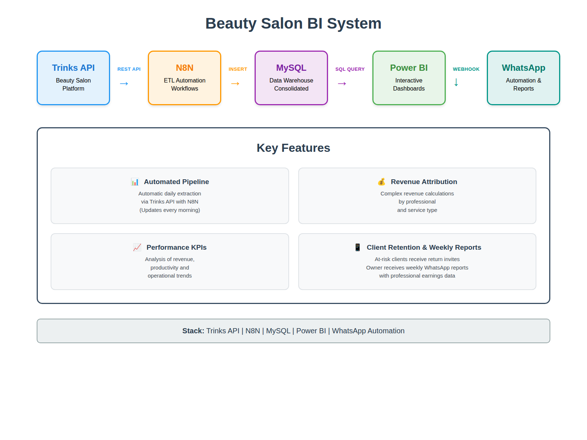
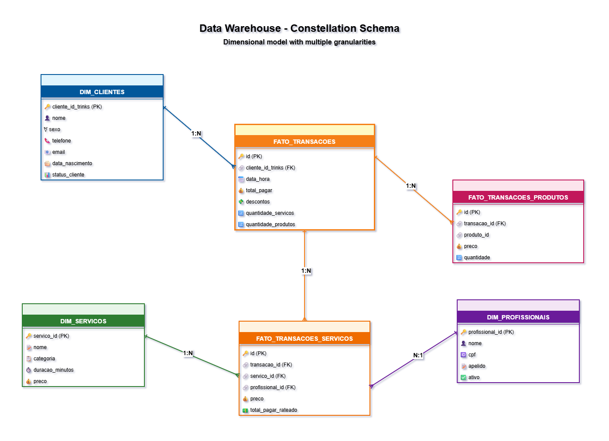
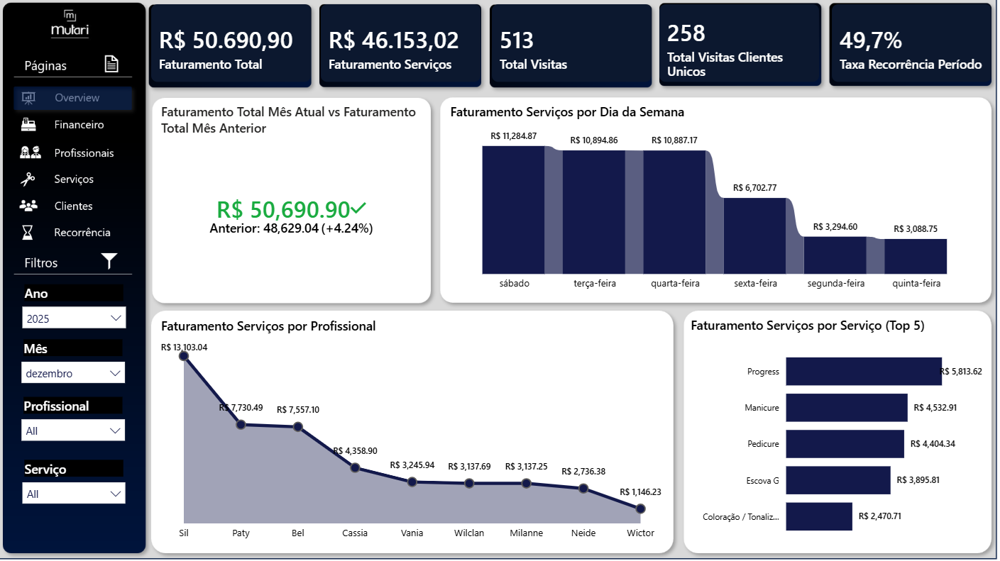

Automated daily BI pipeline with per-collaborator earnings tracking, client retention automation, and weekly WhatsApp reporting to the owner.
The Trinks platform already provided basic earning summaries to the owner. But that wasn't enough. The business needed richer analytics, per-collaborator breakdowns with proper revenue attribution, client recurrence tracking, and automated actions when things weren't going well.
Trinks showed basic totals, but had no way to accurately break down how much each collaborator actually generated, especially for services shared between professionals in the same transaction.
No tracking of how often clients returned. Churned clients were only noticed long after they had stopped coming in.
When a client stopped showing up, nothing happened. No message, no offer, no re-engagement trigger.
The owner had no consolidated view of how the week went, how the month was tracking, or how each professional was performing.

Built a complete end-to-end BI pipeline that runs every morning, extracting the previous day's transactions from the Trinks API, transforming them through N8N workflows, and persisting the data in a MySQL data warehouse. The owner gets a Power BI dashboard updated daily and an automated WhatsApp report every Monday morning.

Runs every morning at 7 AM, extracting the previous day's transactions from the Trinks API and persisting them in the MySQL data warehouse. Zero manual intervention, with automatic error notifications via WhatsApp.
Proprietary proportional algorithm distributes total transaction value across services based on price ratio, enabling accurate per-collaborator earnings tracking even for shared transactions.
Every Monday morning the owner receives an automated WhatsApp message with last week's summary, month-to-date performance, and how much each collaborator produced during the period.
Clients are automatically classified as Active (up to 40 days since last visit), At Risk (41-90 days), or Inactive (over 90 days). When a client becomes At Risk, an automated WhatsApp message is sent with a personalized offer to bring them back.
For the first time, the owner had a clear and accurate picture of how much each collaborator was actually generating, updated every morning without any manual effort. That visibility alone changed how the business was managed. The numbers followed.

The dashboard refreshes every morning with the previous day's data, showing revenue by day of week, top-performing services, per-collaborator productivity, month-over-month trends, and client retention metrics. Interactive filters allow deep-dive analysis by time period, professional, and service type.
Trinks REST API - Beauty salon management platform
N8N - Self-hosted workflow automation with custom JavaScript transformations
MySQL 8.0 - Constellation schema with 6 tables optimized for analytical queries
Power BI - Connected to MySQL DW, refreshed daily by the ETL pipeline
Evolution API - WhatsApp integration for weekly owner reports and at-risk client retention messages
VPS Ubuntu 24 + Docker - Self-hosted for full control and data privacy